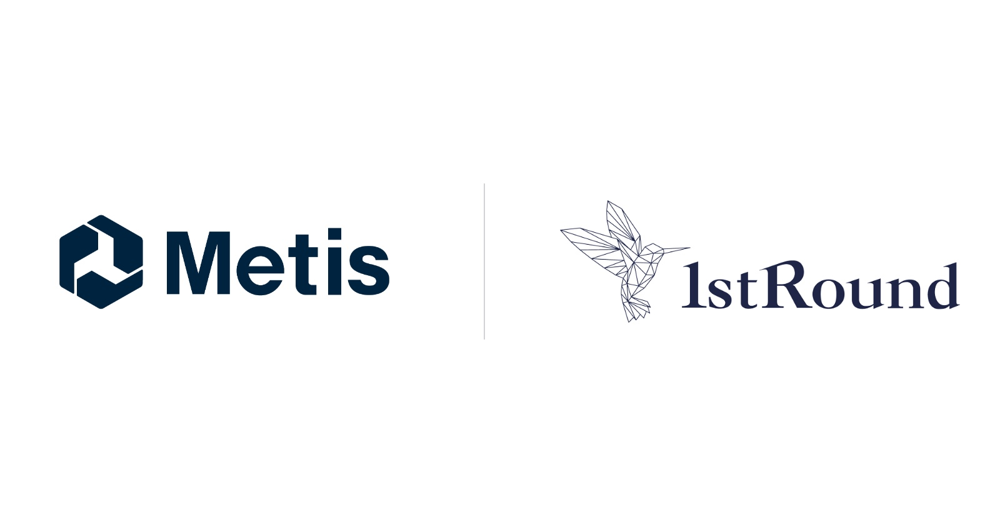

Metis selected for UTokyo IPC's 1stRound program
Metis、東大IPC 第15回「1stRound」に本採択
UTokyo Innovation Platform Co. (UTokyo IPC) announced on October 5, 2026 the teams selected for the 15th cohort of 1stRound, following its screening in June 2026. Metis was one of four teams, out of eight selected, to receive full selection. Read the announcement.

About 1stRound
1stRound began at the University of Tokyo in 2017 and took its current name in 2019. It is now co-hosted by 24 universities and 6 national research institutes, and UTokyo IPC describes it as the largest program of its kind in Japan. Over nine and a half years it has selected 118 teams, and about 90% of them have gone on to raise funding.
Selected teams receive non-equity funding, hands-on support, and opportunities to work with the program's corporate partners.
How UTokyo IPC describes Metis
In its announcement, UTokyo IPC notes that design engineers spend about half of their working hours on tasks other than design, such as searching for design rationale and internal standards. It describes Metis as an MIT startup co-founded by a CEO with hands-on design experience at Toyota and Apple and a CTO who researched the product's core technology at MIT CSAIL.
Metis uses AI to structure scattered design knowledge, links it to the part being designed inside and around CAD with the source shown, and captures tacit knowledge so it can be passed on as an organizational asset.
What it means for us
Much of the automotive supply chain we serve is in Japan. Co-founder and CEO Hiro Ogasawara works between Japan and the United States. Through 1stRound, Metis will meet the program's corporate partners and receive mentoring from venture capitalists as we deepen our work with Japanese OEMs and suppliers.
We thank UTokyo IPC and the 1stRound team for their support.
Leading a design engineering team in Japan or abroad? Request a demo.
東京大学協創プラットフォーム開発株式会社（東大IPC）は2026年10月5日、第15回「1stRound」の採択チームを発表しました。MIT発スタートアップのMetisは、採択8チームのうち、上位4チームが対象となる本採択に選ばれました。審査会は2026年6月に行われました。（東大IPCの発表はこちら）
1stRoundについて
1stRoundは2017年に東京大学を母体として始まり、2019年に現在の名称となりました。現在は24大学と6つの国立研究機関が共催する、国内最大規模のアカデミア共催・創業成長支援プログラムです。9年半で累計118チームを採択し、採択チームの資金調達成功率は約90%にのぼります。
採択チームには、Non-Equity型の活動資金、ハンズオン支援、コーポレートパートナーとの協業機会が提供されます。
東大IPCによるMetisの紹介
東大IPCは発表の中で、設計者が業務時間の約5割を、設計根拠や社内基準の探索など、設計以外の非正味業務に費やしていると指摘しています。そのうえでMetisを、トヨタ自動車とAppleで設計者としての実体験を持つCEOと、MIT CSAILでプロダクトの中核技術を研究してきたCTOが共同創業したMIT発スタートアップとして紹介しています。
Metisは、散在する設計の知見をAIで構造化し、CADの中と周辺で、設計中の部品に紐づけて出典付きで提示します。さらに暗黙知も捕捉し、組織の集合知として次の世代へ引き継ぎます。
今後に向けて
私たちが向き合う自動車のサプライチェーンの多くは日本にあります。共同創業者でCEOの小笠原 浩樹は日本とアメリカを拠点に活動しています。1stRoundでは、コーポレートパートナーとのミートアップやキャピタリストによるメンタリングを通じて、日本のOEMやサプライヤーとの取り組みをさらに進めていきます。
東大IPCおよび1stRound関係者の皆様のご支援に感謝いたします。
国内外の設計チームの皆様、デモのご依頼はこちら。